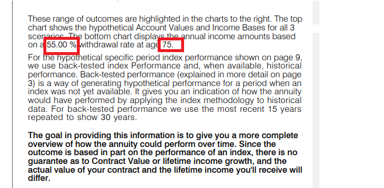

<div id="section">
	<div id="title">
		Client Reference : AIG5<br/>
		Module Name : FIA<br/>	
		File Name : ConditionFields.cs, Field.xml, RangeOfOutComes.xml
	<hr/>
	</div>
	<div id="image">
		Image Reference<br/>
		
		
	</div>
	<div id="codesinppet1">
		<div>
		Code Snippet of <b>ConditionFields.cs</b><br/>
<textarea rows="10" cols="200" multiple="true" >	
	switch (eKey)
	{ 
		case "WithdrawalsFirstRow":
		if(InputSupplement.HasGMWB)
			fieldData = InputSupplement.GMWBWithdrawalPerValue;
		break;
		case "IncomeActivationAge":
			fieldData = InputSupplement.IncomeActivationAge.ToString();
		break;
	}

</textarea>

		</div>
		<div>
			Code Snippet of <b>Field.xml</b><br/>
<textarea rows="10" cols="200" multiple="true" >	
	<fields>
		<replaceField code="WithdrawalsFirstRow" formatProvider="ProviderNone"></replaceField>
		<replaceField code="IncomeActivationAge" formatProvider="ProviderNone"></replaceField> 
	</fields>	

</textarea>
		</div>
		<div>
			Code Snippet of <b>RangeOfOutComes.xml</b><br/>
<textarea rows="10" cols="200" multiple="true" >	
	<paragraph reportID="44" name="Detail" Key="ROO#6WithGLB_2">
		<p><font face ="Swis721 Lt BT Light" size="11">These range of outcomes are highlighted in the charts to the right. The top chart shows the hypothetical Account Values and Income Bases for all 3 scenarios. The bottom chart displays the annual income amounts based on a [!WithdrawalsFirstRow] withdrawal rate at age [!IncomeActivationAge].</font></p>
	</paragraph>

</textarea>
		</div>
	</div>
</div>

